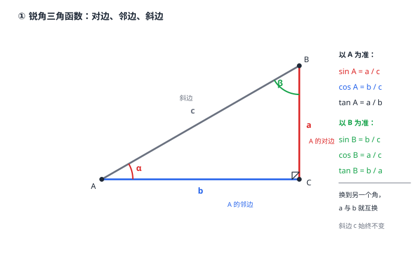

锐角三角函数（正弦·余弦·正切）
勾股定理管的是「三条边之间」，但很多题目给的是一个角，要反求边。锐角三角形里靠相似比能补上这一环：固定一个锐角，三条边的比例就被锁死了——这组比例就是锐角三角函数。正弦是「对边比斜边」，余弦是「邻边比斜边」，正切是「对边比邻边」，全都落在 0 到 1 之间（正切除外，它可以大于 1）。30°、45°、60° 三个特殊角的三角函数值要背熟：\sin 30^\circ=\dfrac12、\sin 45^\circ=\sqrt2/2、\sin 60^\circ=\sqrt3/2，余弦正好倒过来，正切则是 \sqrt3/3、1、\sqrt3。有了它们，「一个锐角 + 一条边」的问题就能解；反过来「已知两边求角」初中没有工具，因为那需要反三角函数。
| 所属主题 | 锐角三角函数 |
|---|---|
| 所属模块 | 几何 |
| 课标学段 | 第四学段（7~9 年级） |
| 前置知识 | 相似三角形的判定与性质、直角三角形与勾股定理、角与角平分线 |
| 核心素养 | 几何直观推理能力抽象能力 |
教材定位
人民教育出版社《人教版（2024版）义务教育教科书·数学》
九年级下册第32章 锐角三角函数32.1 正弦、余弦与正切
对应九下 32.1：锐角三角函数的概念与特殊角的三角函数值。
说明
公理地基：直角三角形中两条直角边的平方和等于斜边的平方（直角三角形与勾股定理），加上「相似三角形对应边成比例」（相似三角形的判定与性质）。勾股给的是三条边之间的数量关系，相似给的是「形状相同则比例相同」——两者合起来，才能把一个角和一组边锁在一起。
为什么角能决定边之比：在所有形状相同的直角三角形里（只是大小不同），三条边的长度按同一个倍数放大或缩小，所以「哪条边比哪条边」是一个只由形状决定、与大小无关的比值。把这个比值取个名字，就叫锐角三角函数。约定：在 \triangle ABC 中（\angle C=90^\circ），把 \angle A 的对边 BC 记作 a，邻边 AC 记作 b，斜边 AB 记作 c。于是 \sin A=a/c，\cos A=b/c，\tan A=a/b。换成角 B，a、b 就要对调——「对边邻边」永远相对当前这个角而言，这是本节最容易错的地方。
三个值的范围：正弦、余弦都是「一条直角边比斜边」，直角边短于斜边，所以两者都在 0 与 1 之间（锐角三角形取不到 0 和 1）；正切是「对边比邻边」，两条直角边谁长谁短不固定，所以正切可以大于 1、小于 1、等于 1，但永远是正数。
特殊角的三角函数值要记牢：30^\circ、45^\circ、60^\circ 三个角的值如下表——30^\circ 时 \sin=\dfrac12、\cos=\sqrt3/2、\tan=\sqrt3/3；45^\circ 时 \sin=\cos=\sqrt2/2、\tan=1；60^\circ 时 \sin=\sqrt3/2、\cos=\dfrac12、\tan=\sqrt3。记忆抓手两条：一是 30^\circ 与 60^\circ 的正弦余弦正好互换；二是互余的两个角，正弦与余弦互换（\sin\alpha=\cos(90^\circ-\alpha)，反过来也成立）。正切没有这条互余规律可用（因为初中不学余切），只能按表背。
使用场景
斜坡与爬升：一条坡道与水平面的夹角（坡角）给定，每前进 1 米水平距离就上升多少米，就是正切值——工程上「每 100 米水平距离上升多少米」的坡度，正是坡角的正切。
太阳高度角与影长：早晨太阳斜照，影长与物高之比就是太阳高度角的正切；太阳越高影子越短，正切值越大——这条把「影子长短」和「太阳高低」绑在了一起。
注意点
先认准「谁是当前角的对边」。在 \triangle ABC 中若 \angle C=90^\circ，则 \angle A 的对边是 BC、邻边是 AC；换成 \angle B，对边变 AC、邻边变 BC。判断口诀：把当前角对着那条边看，对面那条直角边就是对边，夹着当前角的那条直角边是邻边，剩下的斜边永远是斜边。
正切的分母是邻边，不是斜边。写成 a/c 是把正切当正弦用了——正切的比值可以大于 1，如果算出来不超过 1，多半是分母取错了边。
三角函数只能「由角求边」（或求比值），不能「由两边求角」。已知直角三角形的两条边求那个锐角，需要反三角函数（或解方程），初中阶段不做这类题。遇到「已知两边求角度」的题目，要先确认是不是漏了条件。
证明

图 1：同一个直角三角形，「对边邻边」是相对哪个角而言的——以 A 为准时 BC 是对边、AC 是邻边；以 B 为准时 AC 是对边、BC 是邻边
证明
结论 1锐角三角函数的值只由这个角决定，与三角形的大小无关。
取两个形状相同、大小不同的直角三角形 \triangle ABC 与 \triangle A'B'C'，其中 \angle C=\angle C'=90^\circ、\angle A=\angle A'。由 AA 判定得 \triangle ABC\sim\triangle A'B'C'，于是对应边成比例：BC/B'C'=AC/A'C'=AB/A'B'。于是「对边比邻边」「邻边比斜边」「对边比斜边」这三个比值，在两个三角形里都相等——它们由 \angle A 唯一确定，与三角形的大小无关。这正是锐角三角函数能按「角」来取值的理由。
关键一步AA 相似。它保证两个三角形对应边成比例，是「比值相等」这句话唯一的依据；没有相似，三角形大小一变比值就跟着变。
结论 2\sin30^\circ=\dfrac12，\cos30^\circ=\sqrt3/2，\tan30^\circ=\sqrt3/3。
作一个含 30^\circ 角的直角三角形 \triangle ABC，\angle A=30^\circ、\angle C=90^\circ。取斜边 AB 的中点 M，连 CM。由「直角三角形斜边上的中线等于斜边的一半」得 CM=AM=BM=\dfrac12 AB；又 BM=CM，所以 \triangle BCM 是等边三角形，\angle MBC=60^\circ，即 \angle B=60^\circ。此时 BC=CM=\dfrac12 AB，故 \sin30^\circ=BC/AB=\dfrac12；由勾股定理 AC^2=AB^2-BC^2=\dfrac34 AB^2，得 AC=\sqrt3/2AB，于是 \cos30^\circ=AC/AB=\sqrt3/2、\tan30^\circ=BC/AC=1/\sqrt3=\sqrt3/3。
关键一步斜边上的中线等于斜边的一半。这一句把 30^\circ 的锐角三角形变成了等边三角形，是 30^\circ 的值能算出来的枢纽；60^\circ 的三个值由结论 3 与它互换对边邻边得到。
结论 345^\circ 的三个三角函数值是 \sin45^\circ=\cos45^\circ=\sqrt2/2，\tan45^\circ=1。
取一个等腰直角三角形 \triangle ABC，\angle A=45^\circ、\angle C=90^\circ，两直角边 AC=BC=a。由勾股定理 AB=\sqrtAC^2+BC^2=\sqrt2 a。于是 \sin45^\circ=BC/AB=a/\sqrt2 a=\sqrt2/2，\cos45^\circ=AC/AB=\sqrt2/2（两者相等，因为对边与邻边一样长），\tan45^\circ=BC/AC=1。
关键一步等腰直角三角形的两直角边相等，所以对边与邻边可以互换——这是 45^\circ 处正弦与余弦相等的唯一理由；换成一般锐角就不相等了。
结论 4两个锐角互余时，正弦与余弦互换，即 \sin A=\cos B（当 \angle A+\angle B=90^\circ）。
设 \angle A+\angle B=90^\circ。在 \triangle ABC 中（\angle C=90^\circ），BC 是 \angle A 的对边，同时它也是 \angle B 的邻边。于是同一个比值可以写成两种形式：按 \angle A 看，\sin A=BC/AB；按 \angle B 看，\cos B=BC/AB。两者相等，故 \sin A=\cos B；把 B 换成 90^\circ-A 即得 \sin A=\cos(90^\circ-A)。
关键一步BC 这条边同时扮演两个角色——它是 \angle A 的对边、\angle B 的邻边。同一条边写成两个不同的比，才逼出这个等式。
动手实验
拿一张方格纸，画一个直角边都是 4 格的等腰直角三角形，量出斜边约 5.66 格，算出 4/5.66\approx 0.707，与 \sin45^\circ=\sqrt2/2\approx 0.707 对得上。再画一个高 1 格、底 3 格的直角三角形，量得斜边约 3.16 格，对边比斜边约为 1/3.16\approx 0.32。接着保持高与底的比例不变，把图形整体放大一倍（高改成 2 格、底改成 6 格），量得斜边约 6.32 格，再算「对边比斜边」仍是 2/6.32\approx 0.32——图形放大缩小，比值纹丝不动，这就是「比值只由角决定」的直观证据。反过来，若把高改成 1 格、底改成 2 格（角变了），比值就变成 1/\sqrt5\approx 0.447，与原来不同。
解题思路
求三角函数值三步：① 看清是哪个锐角（题目问 \sin A 就一切以 A 为准）；② 在这个锐角处定出对边、邻边、斜边；③ 套定义求比值。结果如果超过 1，检查是不是把正切当正弦写。
已知特殊角与一条边求其他边三步：① 判断已知边在三角函数里扮演什么角色（是斜边、对边还是邻边）；② 用 \sin=\dfrac\text对边\text斜边、\cos=\dfrac\text邻边\text斜边、\tan=\dfrac\text对边\text邻边 中的哪一个；③ 求出目标边后用勾股定理回代校验一遍。
记特殊角值的两个抓手：① 30^\circ 与 60^\circ 互换、45^\circ 自成一格；② 互余角的正弦与余弦互换。实在记不住时，用等边三角形和等腰直角三角形现场推一遍，比死记更牢。
按场景的例题
例 1（场景：测量与工程） 支架斜撑长度与角度的换算
一个直角三角形支架，\angle C=90^\circ，\angle A=30^\circ，斜边 AB=10 厘米。求 BC 与 AC 的长。
解：以 \angle A 为准：BC 是对边，AC 是邻边，AB 是斜边。正弦对边比斜边：\sin30^\circ=BC/AB=\dfrac12，所以 BC=10×\dfrac12=5（厘米）。余弦邻边比斜边：\cos30^\circ=AC/AB=\sqrt3/2，所以 AC=10×\sqrt3/2=5\sqrt3（厘米）。勾股回代：5^2+(5\sqrt3)^2=25+75=100=10^2，与斜边相符 \checkmark。
答：BC=5 厘米，AC=5\sqrt3 厘米。
例 2（场景：图形设计） 等腰直角三角形的边长设计
一块等腰直角三角形形状的金属牌，两个直角边相等，斜边长 8 厘米。求两条直角边的长。
解：等腰直角三角形的锐角都是 45^\circ。以其中一个锐角为准：设直角边为 a，则 a 是该角的对边也是邻边，斜边 8 是斜边。正弦：\sin45^\circ=a/8=\sqrt2/2，所以 a=8×\sqrt2/2=4\sqrt2（厘米）。勾股回代：(4\sqrt2)^2+(4\sqrt2)^2=32+32=64=8^2，两条直角边确实相等且勾股成立 \checkmark。
答：两条直角边各长 4\sqrt2 厘米（约 5.66 厘米）。
例 3（场景：生活优化） 直角三角形三边已知时求各角的三角函数值
在 \triangle ABC 中，\angle C=90^\circ，AB=10、BC=8、AC=6。求 \sin A、\cos A、\tan A 以及 \sin B、\cos B、\tan B 的值。
解：先以 \angle A 为准：对边是 BC=8，邻边是 AC=6，斜边是 AB=10。于是 \sin A=8/10=\dfrac45，\cos A=6/10=\dfrac35，\tan A=8/6=\dfrac43。再以 \angle B 为准：对边换成 AC=6，邻边换成 BC=8，斜边仍是 10。于是 \sin B=6/10=\dfrac35，\cos B=8/10=\dfrac45，\tan B=6/8=\dfrac34。互余检验：\sin A=\dfrac45 与 \cos B=\dfrac45 相等，\cos A=\dfrac35 与 \sin B=\dfrac35 相等，符合 \sin A=\cos(90^\circ-A) \checkmark。
答：\sin A=\dfrac45、\cos A=\dfrac35、\tan A=\dfrac43；\sin B=\dfrac35、\cos B=\dfrac45、\tan B=\dfrac34。
常用推论
锐角三角函数是「相似」的另一种写法：勾股定理说三条边的平方关系，相似说形状相同则比例相同，三角函数把「比例」这个形状特征取名并给了值。知道了 \angle A，三角函数值就等于一串边之比——角信息与边信息之间的翻译器，凡是「给角求边」的题都靠它。
正弦与余弦天生成对：它们互为余角（\sin\alpha=\cos(90^\circ-\alpha)），所以同一个直角三角形里，一个角的正弦正好是另一个角的余弦。这条互余关系也是「已知一个特殊角求另一个」的工具——30^\circ 与 60^\circ 的值互换就来自这里。正切没有对应的伙伴（初中不学余切），只能单独记。
三角函数把「直角」变成了「斜率」：\tan A 就是这个角所对应的斜边与水平方向之间的比值。斜坡的陡峭、太阳的高矮、楼梯的踏步比，全是同一个正切值在说话——同一个比值换个场景就换个名字，这是本节最值得记住的通感。
易错点
错在 \triangle ABC（\angle C=90^\circ）中，把 \angle A 的邻边记成 BC。
为什么错对边与邻边搞反了。判断方法是「对着当前角看」：\angle A 的对边是它对面的那条直角边 BC，夹着 \angle A 的那条直角边 AC 才是邻边，斜边 AB 永远是斜边。
正确\angle A：对边 BC、邻边 AC、斜边 AB；\angle B：对边 AC、邻边 BC、斜边 AB。
错写出 \tan A=BC/AB。
为什么错把正切的分母当成了斜边。正切是「对边比邻边」，分母是那条夹着当前角的直角边。若照这个写法算，\tan A 永远不会超过 1，而 60^\circ 角的正切是 \sqrt3>1，矛盾。
正确\sin A=\dfrac\text对边\text斜边，\cos A=\dfrac\text邻边\text斜边，\tan A=\dfrac\text对边\text邻边。
错以为已知直角三角形的两条直角边就能求出那个锐角的度数。
为什么错求角需要把比值「反查」回角度，这要用反三角函数（或解方程），初中阶段没有这个工具。初中能做的是「由角求边」和「求三角函数值」。
正确已知两边求角度属于超纲范围；初中只做「已知一个锐角求边」或「已知三边求三角函数值」。
直观理解
锐角三角函数其实是把「斜坡有多陡」换了个说法。站在 \angle A 上看那条斜边 AB，如果斜边是躺平的（角很小），那么对应的直角边也很短，正切值就小；如果斜边竖起来（角接近 90^\circ），对边几乎追平邻边，正切就趋于无穷。三种函数不过是同一副三角形的三个不同量法：正弦问「竖直方向走了多少」，余弦问「水平方向走了多少」，正切问「竖直比水平多了几倍」。记住这一幅图，就不必死记「对边邻边斜边」的口诀了（图 1：同一副三角形，换个角看，三个比值就重新排列）。